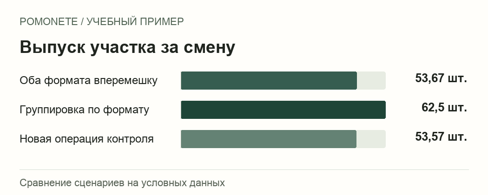

Время переналадки между товарами на складе селлера Яндекс Маркета
Как посчитать выпуск смены при смене упаковки, которая отнимает время у основного потока.
В магазине стеклянных банок время упаковки измерили на уже подготовленном месте. В фактической смене оно длиннее из-за переналадки. Чтобы понять, сколько заказов Яндекс Маркета успеют пройти участок, учтём общую длительность переходов отдельно от операции на единицу.
Какие переходы записывать
В течение нескольких дней отметьте, когда закончился один формат и стала возможна первая упаковка второго. Запишите расходники, замеры и смену шаблона. Поломки держите отдельной причиной, если они редко повторяются. Тогда можно сравнить стоимость постоянного перехода.
Чтобы пересобрать расчёт «Выпуск участка за смену» для своего магазина, перенесите в него исходные числа. В формуле A обозначает «доступное время, мин», B обозначает «время переналадок, мин», C обозначает «минут на упаковку». Сначала убирают неизбежную часть из доступной суммы. Оставшаяся разница даёт допустимое значение на единицу объёма. Запишите рядом период и охват каждого среза. Если для одной строки известна только оценка, оставьте пояснение непосредственно рядом с ней: по итоговой цифре источник уже не восстановить.
Выпуск участка за смену = (A − B) ÷ C
| Условие | Доступное время, мин | Время переналадок, мин | Минут на упаковку | Выпуск участка за смену |
|---|---|---|---|---|
| Оба формата вперемешку | 430 | 108 | 6 | 53,67 шт. |
| Группировка по формату | 430 | 55 | 6 | 62,5 шт. |
| Новая операция контроля | 430 | 55 | 7 | 53,57 шт. |

В сценарии «Оба формата вперемешку» в формулу подставляем доступное время, мин = 430, время переналадок, мин = 108, минут на упаковку = 6. Получается 53,67 шт.. Станция переключается между коробами и защитным материалом несколько раз за рабочий день.
В сценарии «Группировка по формату» в формулу подставляем доступное время, мин = 430, время переналадок, мин = 55, минут на упаковку = 6. Получается 62,5 шт.. Переналадок меньше, перенос сроков отдельных заказов проверен.
В сценарии «Новая операция контроля» в формулу подставляем доступное время, мин = 430, время переналадок, мин = 55, минут на упаковку = 7. Получается 53,57 шт.. На упаковку каждой единицы добавилась отдельная проверка содержимого.
Если «Оба формата вперемешку» взять за исходную точку, «Группировка по формату» меняет показатель «выпуск участка за смену» на 8,83 шт., а «Новая операция контроля» на -0,1 шт.. Между двумя последними строками разница составляет -8,93 шт. при вычитании второй из третьей. Смотрите, какой именно вход изменился между строками. Если менялись объём и условия одновременно, итог сравнения относится ко всему сочетанию.
При расчёте «выпуск участка за смену» оставляйте исходную точность, пока складываете значения и сверяете строки. В таблице видны 53,67 шт., 62,5 шт. и 53,57 шт., уже округлённые для чтения. При суммировании многих периодов используйте исходные данные. Например, удельные результаты с разными знаменателями нужно пересобрать из числителей и соответствующих объёмов, а затем округлить. Пометьте, где округление применяется, чтобы при передаче отчёта речь шла об одних и тех же числах.
Когда группировка мешает передаче
Объединение одинаковых коробок экономит минуты, если заказы можно обработать позже в той же смене. Для срочного товара задержка из-за ожидания группы ухудшает долю передачи. Проверьте крайние сроки и оставьте место для двух режимов.
Воспроизводимость здесь начинается с критериев включения. Отметьте, чем «Оба формата вперемешку» отличается от «Новая операция контроля» и какие наблюдения будут отброшены в каждой строке. Как подтверждение используйте журнал склада и временные отметки заказов. У неполных записей выделите одну причину. Она покажет, какие цифры ещё стоит собирать и какой объём анализа потерян.
Для сравнения выведите короткий журнал с временем поступления работы, началом обработки и моментом передачи. Длительность операции измеряют на нескольких сменах, чтобы короткая спокойная неделя не стала единственной нормой. Товары разных размеров и сложность сборки записывают отдельными группами. На узком участке неравномерность важна так же, как общая загрузка: два одинаковых дневных итога могут оставить разный хвост необработанных заказов.
Что сильнее всего меняет результат
Продолжим на базе «Группировка по формату» (62,5 шт.). Разложим расчёт на отдельные входы: «доступное время, мин», «время переналадок, мин», «минут на упаковку». Для удобства каждый опыт меняет одну величину примерно на десятую часть. Во всех остальных полях оставляем исходные числа. Для проверки более длинного периода шаги можно подобрать по фактическим колебаниям из истории.
- «Доступное время, мин» меняется с 430 на 473. При прежних остальных входах получается 69,67 шт., сдвиг составляет 7,17 шт..
- «Время переналадок, мин» меняется с 55 на 61. При прежних остальных входах получается 61,5 шт., сдвиг составляет -1 шт..
- «Минут на упаковку» меняется с 6 на 7. При прежних остальных входах получается 53,57 шт., сдвиг составляет -8,93 шт..
Отметьте в рабочей таблице, что «минут на упаковку» показал сдвиг -8,93 шт.. Переведите эту величину в цену решения: проверьте, достаточно ли её для смены выбранного режима. Если решение остаётся тем же, ограничьтесь контролем на очередной дате. При перевороте вывода запросите уточнение исходного значения и повторите опыт.
Для двух сотрудников можно настроить разделение форматов между столами. В смете будут дополнительный ресурс, общий поток и изменение времени переноса заказа. Сравните с группировкой на одной станции, прежде чем менять постоянное расписание.
Как выбрать ритм работы
Разложите реальные позиции на блоки по формату, ограничив ожидание самого раннего заказа. После пилота сравните выпуск и число переходов. Возвраты от упаковки проверяйте отдельно, чтобы экономия минут не привела к заметной потере качества.
Полезно раз в несколько смен собрать пакет отклонений и приложить отметки о причинах. У одного опоздания бывает несколько объяснений, и назначать его первому видимому участку рискованно. Если временный ресурс перемещали между зонами, включите в расчёт, где исчезли эти часы. После пилота проверьте верхний хвост длительности и число заказов, которые перешли за срок.
Чтобы отделить ошибку оценки от реального изменения, после следующего отчёта соберите «выпуск участка за смену» дважды. Сначала используйте исходное правило, затем замените только один предположенный вход фактическим. Так аналитика селлера Яндекс Маркета покажет, стоит ли тратить время на повторный замер или менять рабочую операцию. В итоговом отчёте сохраните обе даты проверки.